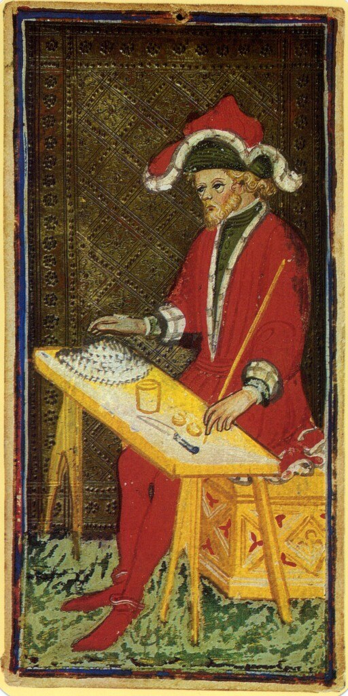

Major Arcana
According to the tarot tradition, the 22 cards of the Major Arcana are emblems that embeds profound knowledge about the Future, the Present and the Past. In Sprezzatura each Major Arcana card alludes to certain tropes of Renaissance imagination and literature, inspiring the Game Master in setting up the current Scene (or Canto).
Furthermore, each Major Arcana card provides temporary mechanics that will force the players to reconsider their interaction and strategies.
Here some suggestions of temporary mechanics:
- Reduce or increase Failure dice according to Position.
- Increase Dissonance effect by increasing its dice by one.
- Constraint Resonance Poll between players
- Exchange, reduce or increase cards in players' hands.
- Boost or flaw a certain Temperament for the Scene by changing rules about die value, intervals and Consonances.
- Force players to play their main character off-scene.
List of Major Arcanas
Cards from the Visconti-Sforza deck (15th century)
| Image | Tarot Card | Tropes | Mechanics |
|---|---|---|---|
|  | I The Magician | magic, deception, knowledge | Players are allowed to keep 4 cards in their hand. |
 |
II The High Priestess | heroine, quarrel of the sexes, virtue | Every Female character may reduce their Failure dice by one, up to a minimum of one die. |
 |
III The Empress | ||
 |
IIII The Emperor | ||
 |
V The Hierophant | ||
 |
VI The Lovers | ||
 |
VII The Chariot | ||
 |
VIII The Justice | ||
 |
VIIII The Hermit | ||
 |
X The Wheel of Fortune | ||
 |
XI The Strength | ||
 |
XII The Hanged Man | ||
 |
XIII The Death | ||
 |
XIIII The Temperance | ||
| XV | The Devil | ||
| XVI | The Tower | ||
| XVII | The Star | ||
| XVIII | The Moon | ||
| XVIIII | Sun | ||
| XX | The Judgement | ||
| XXI | The World | ||
| XXII | The Fool |